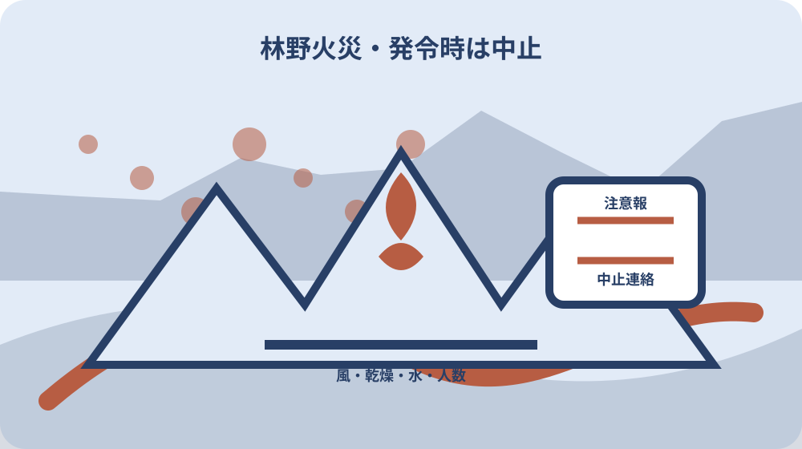
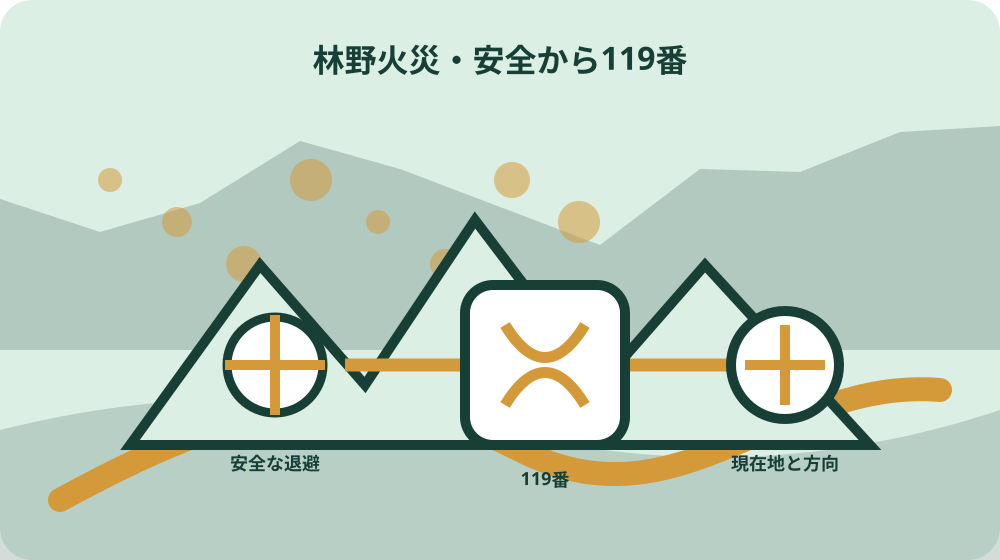

先に結論を確認する
この記事の答え：火を使う前は対象地、目的、許可、消防への届出、注意報等、風、人数、消火用水を確認します。煙や炎を見た後は自分の安全を確保し、現在地、見える方向、燃えている物、人や家屋への危険を119番へ伝えます。
森町で最初に照合する条件：森林との位置関係、火を使う目的、対象物、土地所有者、実施責任者を分け、森町と消防のどちらへ何を確認したかを日付付きで残す。
結論は火を使う前の確認票と煙を見た後の通報票を分ける
森町の山林や農地の近くで火を扱うときは、事前の許可・消防への届出・当日の発令情報を一枚にし、煙や炎を発見した後は119番へ伝える現在地・燃えている物・人の安全を別の一枚にします。許可を取る行為と緊急通報を同じ手順にしません。
事前確認票には土地の所在、森林との距離、火を使う目的、予定日時、実施責任者、消火用水、作業人数、町と消防へ確認した日を置きます。農作業だから当然に焼ける、昔から同じ場所で行っている、という家族内の記憶だけで実行日を決めません。
発見後の通報票には、自分の現在地、煙や炎が見える方向、何が燃えているように見えるか、家屋や人への接近、通報に使う電話番号を置きます。火元へ近づいて正体を確かめることより、自分の退路と安全を先に確保します。
森町森林整備計画は、山火事の未然防止、火気の取扱い、初期消火器材、防火林道を別の論点として示しています。本稿も、予防準備、当日の中止判断、発見後の通報、消防到着後の情報提供を分離して扱います。
この二枚表は森町や袋井消防本部が定めた申請様式ではなく、私、大石浩之が家族や土地管理者の確認漏れを防ぐために提案する補助票です。公的な許可・届出・発令条件は必ず担当窓口の最新案内で確定します。
今日できる最初の一歩は、火を使う予定を書き込むことではありません。対象地の地番と現地への入口を一つの地図で示し、森林との位置関係、土地所有者、実際に作業する人を分けて確認することです。
森町の二つの一次資料で予防方針と発令時行動を読み分ける
森町森林整備計画は、林野火災を防ぐ町の方針を示す資料です。初期消火器材、入山者やドライバーへの周知、林業従事者の火気取扱い、防火林道など、森林管理の側から山火事予防を捉えています。
一方、袋井消防本部が作成し森町公式サイトに掲載された案内は、令和8年からの林野火災注意報を住民行動へ結びます。注意報が出たら、たき火、野焼き、火入れをやめるという当日の判断が具体的です。
二資料は役割が違います。森林整備計画に書かれた長期方針を、今日の火入れ許可や消防への届出が済んだ証明に使いません。消防の注意喚起も、対象地の所有関係や火入れ目的を審査した許可書の代わりにはなりません。
確認票には資料名、版、取得日、読んだ箇所を残します。森林整備計画の計画期間と、注意報案内の発行時期を同じ更新日として扱わず、実行日に近い発令情報は森町ちゃっとメール等で別に確認します。
消防庁の全国案内は、森林または周囲一キロメートルでの火入れに市町村長の許可が必要と説明しています。ただし森町で使う様式、提出先、必要日数、添付図面は全国案内から推測せず、対象地と目的を伝えて町へ確認します。
家族へ資料を渡すときは、長期方針、当日の注意報、個別案件の許可・届出を三つの仕切りに分けます。どれか一つがあるため他の確認も済んだという誤解を、書類の置き場所から防ぎます。
火入れ・たき火・廃棄物焼却を一つの言葉で済ませない
現地で火を使う目的を、草木の処理、森林病害虫の駆除、農作業、祭事、暖を取る行為などの具体語で記録します。家族が野焼きという一語だけを使うと、火入れ許可、消防への届出、廃棄物焼却の扱いが混ざります。
消防庁は廃棄物の焼却を原則禁止と説明し、森林法上の火入れや火災予防条例上の届出とは別に示しています。例外に当たりそうだという自己判断で焼却を始めず、物の種類、量、目的、場所を担当へ伝えます。
森町森林整備計画は、病害虫の駆除では伐倒駆除等を基本とし、やむを得ず火入れする場合に関係法令と安全管理を求めています。火を使う方が早いという都合だけで、やむを得ない事情を作りません。
対象物の写真を事前確認票へ添えます。生木、乾燥した枝、刈草、家庭ごみ、建材が混ざっていないかを見分け、燃やす物をあとから追加しないよう、予定量を袋数や面積で残します。
許可と届出は、火災が起きても責任を免れる証明ではありません。風が強い、周辺が乾いている、作業員が減った、消火用水が確保できない場合は、書類が整っていても中止する判断を確認票に残します。
既に煙や炎が上がっている場面では、これは合法な火入れかを現地へ確認しに行きません。危険を感じる火や延焼のおそれを見たら、安全な場所から119番へ状況を伝え、判断を消防へ渡します。
場所は地番・入口・目標物・斜面方向の四つで伝える
山林では住所だけで火の場所を示しにくいため、土地の地番と、人や消防車が入る入口を別々に記録します。地番上の位置と実際の進入路が離れる場合は、地図に入口番号を振り、道路からの曲がり方を示します。
119番へは、見えている煙の方向と自分のいる場所を混同せず伝えます。自分が林道入口にいて、煙が尾根の反対側に見えるなら、その二点を別の位置として説明します。
近くの橋、集会所、寺社、バス停など、現地で読める目標物を一つ選びます。家族だけに通じる屋号や通称を唯一の手掛かりにせず、地図上の正式名称や道路名と組み合わせます。
斜面では上側・下側という言葉だけでなく、谷、尾根、沢、住宅方向を記します。風向きや煙の流れは変わるため、観察時刻を付け、少し前の情報を現在の状態として断定しません。
通報後に移動する場合は、移動前の現在地と移動先を伝えます。指令員から折り返しがある可能性を考え、電話が通じる安全な場所を選び、電池残量も確認します。
現地写真を撮るために火へ近づきません。安全な距離から既に撮れた写真があれば撮影時刻と方向を残しますが、画像の取得を119番通報より先にしないことを家族ルールにします。
当日の注意報・警報・風・作業人数を中止判断へつなぐ
袋井消防本部の案内では、林野火災注意報が発令されたら、たき火、野焼き、火入れをやめるよう呼び掛けています。許可済みの予定であっても、発令情報を確認した時刻と中止連絡を事前確認票へ記録します。
消防庁は、注意報の発令時には屋外での火の使用を控えるよう努め、警報の発令時には屋外での火の使用が禁止されると説明しています。注意報と警報の名称、行動の強さを取り違えません。
発令がないことを、安全が保証された状態とは読みません。現地の風、乾燥した落葉、周囲の草、斜面、住宅までの距離を確認し、火の粉が管理範囲を越える可能性があれば中止します。
作業者は一人にせず、火を監視する人、消火用水を扱う人、周囲を確認する人を分けます。予定していた人数が集まらなければ、役割を兼ねて強行せず、別日に変更します。
水源は、あるかないかだけでなく、火を使う場所まで届く量と経路を確かめます。ホースの長さ、容器の数、沢水の季節変化を記録し、昨年使えた設備が今回も使えると決めません。
中止した日も記録します。発令、風、人数不足、水源不良のどれで止めたかを残すと、家族は無断中止と誤解せず、次の予定を組む前に同じ条件を確認できます。

森町ちゃっとメール等の発令情報を家族で受け取れる形にする
袋井消防本部の森町掲載資料は、林野火災注意報を森町ちゃっとメール等で知らせるとしています。作業責任者だけが受信する形にせず、当日の中止連絡を担当する家族も受信経路を確認します。
通知を見た画面の時刻、発令名、対象地域を記録します。スクリーンショットだけを転送して終わらず、作業場所が対象に含まれるか、解除されたかを公式発信で読みます。
通知が届かなかった場合に備え、袋井消防本部や森町の公式案内を確認する第二経路を決めます。SNSの転載画像や知人の一文だけで、注意報がない、解除されたと判断しません。
高齢の家族がスマートフォンを使わない場合は、受信担当が電話で中止を伝えます。連絡先一覧には、土地所有者、作業責任者、現地作業者を分け、全員の確認が取れた時刻を残します。
発令情報は当日の状況です。過去の注意報画面を許可申請の添付資料へ流用せず、実行日ごとに確認欄を新しくします。解除後も風や乾燥の現地条件が悪ければ中止判断を維持します。
通知経路の点検日は、火を使う日より前に置きます。当日に登録方法や受信設定を探すと現地担当へ連絡が遅れるため、テスト連絡を行い、誰が読めたかを一覧にします。
煙や炎を見たら安全確保・119番・情報更新の順に動く
煙や炎を見つけたときは、まず自分と同行者が風下や斜面上方など危険な場所にいないかを確認し、安全な退避方向を取ります。火元を探すため林内へ入り、通報が遅れる行動をしません。
安全な場所から119番へ連絡し、火事であること、自分の位置、見える方向、燃えている物、人や家屋への危険、電話番号を答えます。分からない事項を推測で埋めず、見た事実と未確認を分けます。
消防庁は、指令員が出動に必要な事項を順番に尋ねると案内しています。用意した通報票を読み上げつつ、質問の順番に従い、先に作った長い説明を一方的に話し続けません。
携帯電話から119番がつながりにくいときは、公衆電話、近隣の人や店への依頼、消防署所への直接の駆け込みという消防庁の案内を使います。ただし圏外の林内を歩き回らず、安全な移動経路を選びます。
通報後に火の広がり、煙の色、風向き、人の接近が変わった場合は、指令員から示された方法で更新します。自分の判断で何度も別番号から重複通報し、位置情報を混乱させないようにします。
消防車や消防団の活動路を塞がない位置へ車を移し、林道入口で待つよう指示された場合だけ安全に誘導します。勝手に進入路へ立ち入り、消防車の前を走って案内しません。

初期消火は自分の安全と消防の指示を越えて行わない
森町森林整備計画は初期消火器材の配備を進めるとしていますが、これは住民が危険な林野火災へ踏み込む根拠ではありません。炎が広がる、風が強い、退路がない場合は消火より避難と119番を優先します。
手元の水や消火器で対応できそうに見えても、落葉の下、斜面上、樹冠へ火が移る可能性があります。火が小さいという見た目だけで安全を決めず、消防の指示と自分の退路を確認します。
服装、煙、熱、転倒、倒木、送電線など、山林固有の危険を通報票の注意欄へ置きます。住宅火災用の一般的な消火手順を山中へそのまま当てはめません。
いったん炎が見えなくなっても、完全に消えたと自己判断して現場を離れません。消防へ状況を伝え、再燃のおそれを含む確認を任せます。燃え跡の撮影や片付けは、立入りの安全が確認されてからです。
消火用水を準備していた案件でも、使用した量、残量、設備の損傷を記録します。次回の火の使用へそのまま流用せず、器材を点検し、許可・届出・発令情報を最初から確認します。
家族用表には、初期消火をしたかではなく、119番通報時刻、退避時刻、消防到着時刻を残します。勇敢に対応したという評価より、誰も負傷せず正確な情報を渡せたかを振り返ります。
土地所有者・作業者・通報者・連絡担当を別の欄にする
山林の所有者と実際に火を使う作業者が異なる場合は、両者を別欄にします。所有者の了解があることを、火入れ許可や消防への届出が済んだことへ読み替えません。
作業を業者へ頼む場合は、誰が許可・届出を確認し、当日の発令情報で中止を決めるかを契約前に定めます。委託したため土地所有者は何も知らなくてよい、という引継ぎにしません。
煙を見た人と119番へ電話した人も分けます。見た人の位置、時刻、方向を通報者が正しく伝えられるよう、電話やメッセージの要点を短い通報票へ移します。
遠方家族は、現地の火へ近づく指示を出さず、地番資料、所有者連絡先、進入路地図を消防や現地担当へ渡す役に徹します。現地映像を求めて撮影を優先させません。
消防や町から連絡を受ける代表者を一人決め、回答を家族へ戻します。複数人が別々に問い合わせて回答の表現が違った場合は、日時と担当を残して再確認します。
相続直後など所有者が確定していない土地では、火を使う段取りを先行しません。登記、固定資産資料、現地管理者の情報を分け、誰が対象地について町へ相談するかをまず決めます。
消防活動後は燃えた範囲・道路・水源・境界資料を分けて残す
火災後の記録では、燃えた範囲と土地境界を同じ線にしません。消防活動の概略範囲、所有地の筆界、林道や作業道を別色で示し、写真だけから境界を確定しません。
消防車が使った入口、通行しにくかった箇所、水を取った場所を地図へ残します。森町森林整備計画がいう防火林道の一般方針と、今回実際に使えた道を区別します。
倒木、焼損木、法面、沢への流出など、火が消えた後の危険を一覧にします。自分で伐採や重機作業を始めず、立入り、道路占用、森林施業など必要な確認先を整理します。
消防や町から受け取った書類、通報時のメモ、写真、修繕見積りを一件番号で束ねます。保険会社や専門家へ渡した原本、写し、返却物を記録し、同じ写真の版違いを混ぜません。
近隣の土地へ延焼した可能性がある場合は、謝罪や費用の約束を急がず、分かっている事実と未確認範囲を整理します。法律関係や負担判断は専門家へ相談し、記事の一般論で結論を出しません。
次回の予防改善は、今回の出火原因が公式に確認されてから行います。推測した原因を家族記録の確定欄へ書かず、確認機関、確認日、根拠資料を付けます。
大石の視点：山林管理表へ火気・進入路・連絡担当を追加する
森町公式と消防庁から確認できる公的事実は、林野火災の予防方針、注意報・警報時の行動、火入れ許可や届出の必要性、119番通報の考え方です。私はその事実と、不動産実務で使う管理表の提案を明確に分けます。
私の提案は、山林台帳へ火気使用歴、消防車が入れる入口、水源、近隣住宅、発令情報の受信担当を追加することです。これは森町の公式様式ではなく、所有者が変わったときに危険な口伝だけが残るのを防ぐ補助記録です。
山林の売却や相続を考えていなくても、進入路と連絡担当の整理には意味があります。火災、倒木、土砂、無断利用が起きた際、地番だけでは現地へ到達できない問題を早めに見つけられます。
査定や処分を先に進めず、道路、境界、地目、森林計画、管理者を順に確認します。過去の火入れ場所や焼損範囲は土地の法的境界を示さないため、現況メモと権利資料を分離します。
家族間では、火を使ってよい人の一覧ではなく、火を使う前に町と消防へ確認する担当の一覧を残します。世代交代後に昔の慣行だけが伝わることを避け、確認日を更新します。
まだ売ると決めていない所有者にも、火災予防の管理表は役立ちます。維持費、現地確認の負担、近隣連絡先を見える化した後で、保有、委託、譲渡の選択肢を比較できます。
最終確認は実施前・発見時・消防活動後の三段階で閉じる
実施前の完了条件は、対象地、目的、許可・届出、当日の発令情報、風と乾燥、人数、消火用水、中止連絡がすべて確認日付きで並ぶことです。一つでも未確認なら予定どおり実施する欄へ進みません。
発見時の完了条件は、自分の安全を確保し、119番へ現在地と見えた事実を伝え、指令員の質問へ答えたことです。写真撮影、原因推定、所有者探しを緊急通報の前へ置きません。
消防活動後の完了条件は、通報、到着、鎮火等の受け取った情報、立入り上の注意、今後の連絡先を記録することです。消防の公式確認がない段階で鎮火時刻や原因を家族表へ確定記載しません。
三段階の用紙は同じ一件番号で結びますが、許可書、通報票、消防後の記録を一枚へ上書きしません。誰が、いつ、どの立場で確認した情報かを保てるよう、版と更新者を残します。
結論は、火を扱う予定と煙を見た緊急事態を同じ家族ルールにしないことです。予定時は町・消防の条件と中止判断、発見時は安全と119番、活動後は事実と未確認の分離へ切り替えます。
本稿を読んだ直後の一歩は、山林へ行くことではありません。対象地の地番、入口、目標物、所有者、現地担当を一行ずつ書き、火を使う前の窓口確認と緊急時の通報票を別々に用意してください。